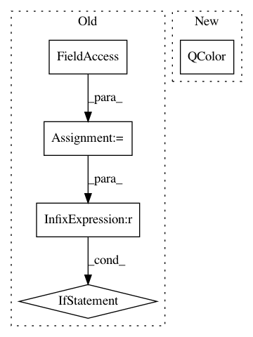

6c331b84293bb6cf5dc5480037d69cc0ffb0c6fe,ilastik/applets/thresholdTwoLevels/thresholdTwoLevelsGui.py,ThresholdTwoLevelsGui,setupLayers,#ThresholdTwoLevelsGui#,189
Before Change
// Show the selected channel
if op.InputChannel.ready():
drange = op.InputChannel.meta.drange
if drange is None:
drange = (0.0, 1.0)
channelSrc = LazyflowSource(op.InputChannel)
//channelLayer = AlphaModulatedLayer( channelSrc,
// tintColor=QColor(self._channelColors[op.Channel.value]),
After Change
channelProvider.Index.setValue( channel )
channelSrc = LazyflowSource( channelProvider.Output )
inputChannelLayer = AlphaModulatedLayer( channelSrc,
tintColor=QColor(self._channelColors[channel]),
range=(0.0, 1.0),
normalize=(0.0, 1.0) )
inputChannelLayer.opacity = 0.5
In pattern: SUPERPATTERN
Frequency: 3
Non-data size: 5
Instances
Project Name: ilastik/ilastik
Commit Name: 6c331b84293bb6cf5dc5480037d69cc0ffb0c6fe
Time: 2013-09-18
Author: martin.schiegg@iwr.uni-heidelberg.de
File Name: ilastik/applets/thresholdTwoLevels/thresholdTwoLevelsGui.py
Class Name: ThresholdTwoLevelsGui
Method Name: setupLayers
Project Name: ilastik/ilastik
Commit Name: b71894ecb9c6beb4c4b1b6c546bc4f9c79f35aaf
Time: 2013-02-06
Author: kemal.eren@iwr.uni-heidelberg.de
File Name: ilastik/applets/pixelClassification/pixelClassificationGui.py
Class Name: PixelClassificationGui
Method Name: getNextPmapColor
Project Name: ilastik/ilastik
Commit Name: b71894ecb9c6beb4c4b1b6c546bc4f9c79f35aaf
Time: 2013-02-06
Author: kemal.eren@iwr.uni-heidelberg.de
File Name: ilastik/applets/pixelClassification/pixelClassificationGui.py
Class Name: PixelClassificationGui
Method Name: getNextLabelColor